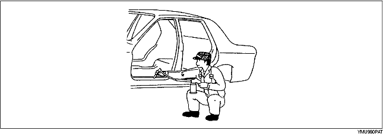

• Applicare il sigillante per carrozzeria dove necessario.
• Applicare il sigillante prima dell'installazione nei punti della carrozzeria dove la sua applicazione dopo l'installazione risulterebbe difficoltosa.
• Applicare l'impermeabilizzante sul sottoscocca dove necessario.

• Applicare l'antiruggine (cera, olio, etc.) sul retro dello zone saldate.

• Applicare l'antirombo sul pavimento riscaldandolo tramite una lampada a raggi infrarossi.